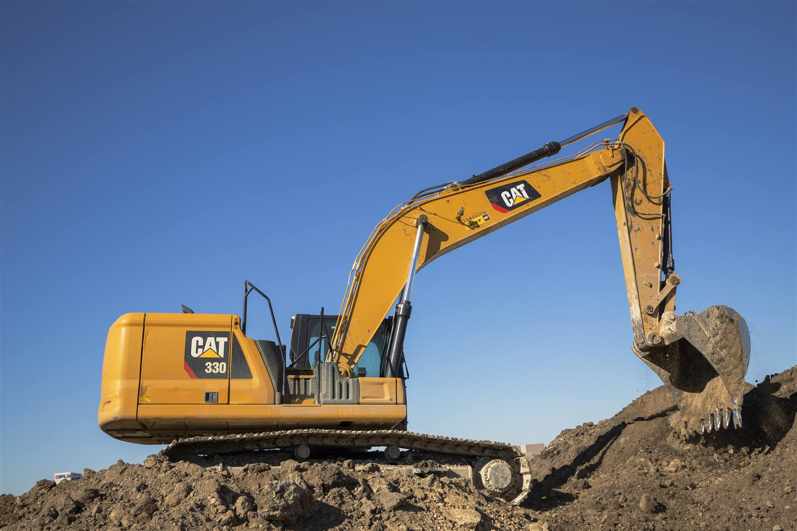
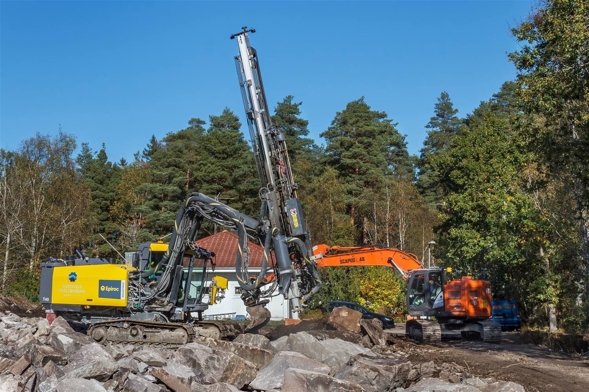
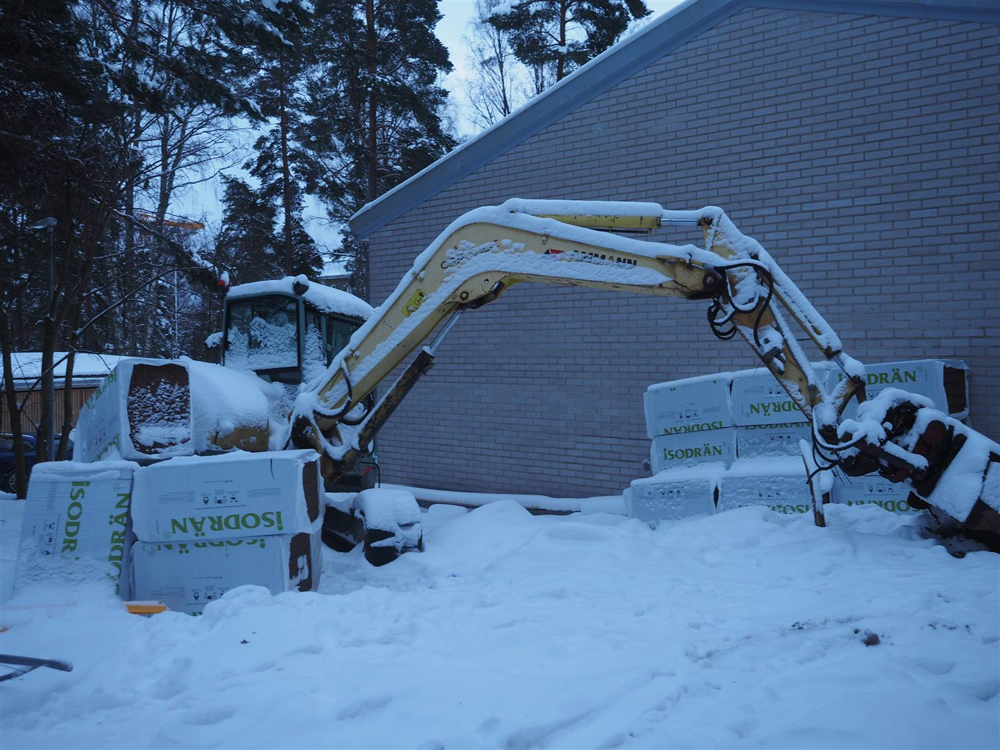
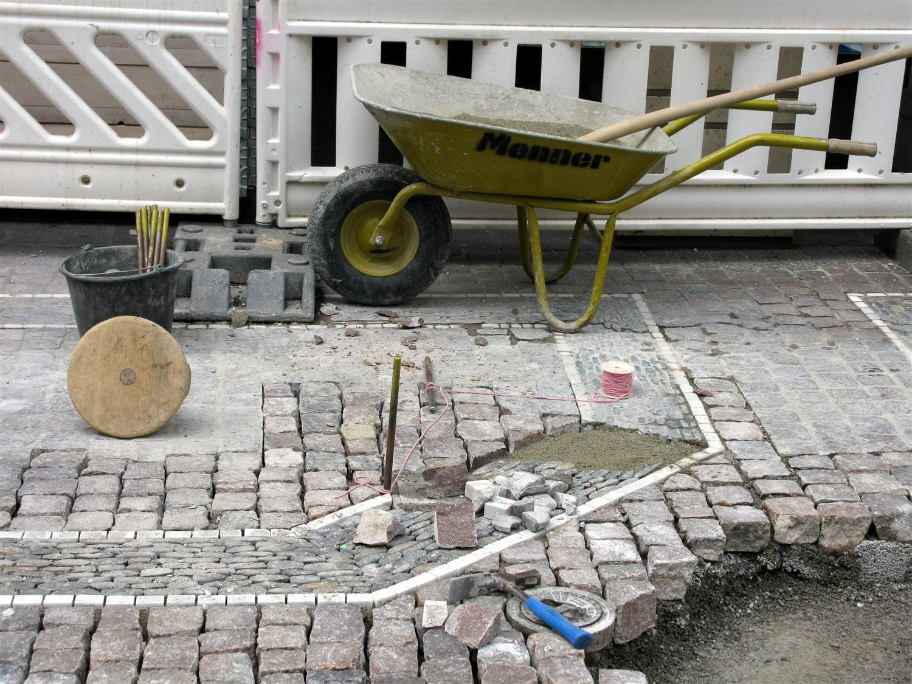
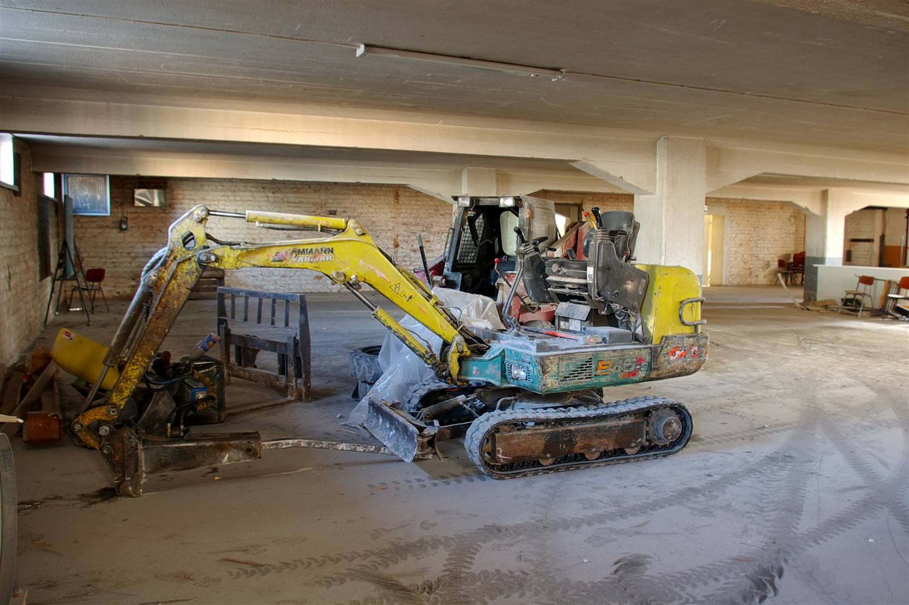
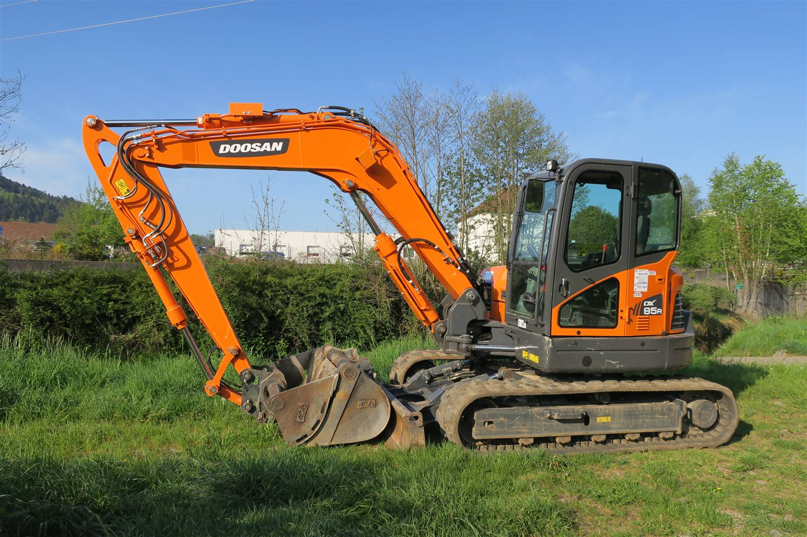

Talonpohjat ja perustukset
Tontin raivaus, kaivuu, massanvaihto, murskekerrokset ja tiivistys. Pohja luovutetaan valmiina, jotta perustustyö pääsee alkamaan sovittuna päivänä.

Teemme kaiken, mitä maanrakennus pitää sisällään — talonpohjat, salaojat, pihat, purkutyöt ja kuljetukset. Omalla kalustolla ja omalla porukalla vuodesta 2018.
Espoon Maanrakennus Oy on perustettu vuonna 2018 ja toimii Espoon Lahnuksesta käsin koko pääkaupunkiseudulla. Meitä on kymmenen, ja teemme työt omalla kalustolla — samat tekijät hoitavat kaivuun, täytöt, salaojat ja pihan viimeistelyn.
Urakan koko ei ratkaise: teemme yhtä huolella yhden päivän kaivuutyön ja usean kuukauden työmaan. Sama tuttu porukka tulee paikalle kummassakin tapauksessa.

Yleisimmät työt, joita meiltä tilataan. Jos tarvitsemasi työ ei ole listalla, soita — se todennäköisesti kuuluu meille silti.

Tontin raivaus, kaivuu, massanvaihto, murskekerrokset ja tiivistys. Pohja luovutetaan valmiina, jotta perustustyö pääsee alkamaan sovittuna päivänä.
Uudet salaojat ja salaojaremontit, tarkastuskaivot, perusvesikaivo sekä rännivesien ja hulevesien johtaminen pois talon vierestä.

Pihan muotoilu, betonikivi- ja luonnonkivipinnat, reunatuet, tukimuurit, nurmetus ja istutusalustat. Piha jää käyttökuntoon, ei työmaaksi.
Soita ja kerro lyhyesti mistä on kyse — tai jätä yhteydenottopyyntö, niin otamme yhteyttä seuraavana arkipäivänä.
Teemme työt omalla kalustolla ja omalla henkilöstöllä. Alta löydät yleisimmät urakkamme — kysy rohkeasti myös muita töitä.
Puuston ja pintamaan poisto, kaivuu, massanvaihto, salaojasorat, murskekerrokset ja tiivistys. Pohja luovutetaan perustustöihin valmiina.
Uudet salaojat, vanhan talon salaojaremontit, tarkastus- ja perusvesikaivot, routaeristeet sekä rännivesien johtaminen.
Pihan muotoilu, betonikivi- ja luonnonkivipinnat, reunatuet, tukimuurit, nurmetus ja istutusalustat sekä asfaltointivalmius.
Heikosti kantavan maan vaihto, täytöt, tontin tasaus ja esirakentaminen. Ylijäämämaat ajetaan asianmukaiseen vastaanottoon.

Rakennusten, laattojen ja rakenteiden purku, materiaalien lajittelu ja poiskuljetus. Hoidamme myös tarvittavat ilmoitukset.

Murskeen, sepelin, soran ja mullan toimitukset tontille sekä maa-ainesten poisajo. Myös yksittäiset kuormat.
Pienet työt hoituvat tuntityönä, isommat urakat kiinteällä hinnalla. Käymme aina ensin katsomassa kohteen, jotta tarjous perustuu todelliseen tilanteeseen eikä arvaukseen.
Tarjous on kirjallinen ja eritelty: työ, koneet, materiaalit ja kuljetukset omina riveinään. Mahdollisista lisätöistä sovitaan kanssasi ennen kuin niitä tehdään.
Omakotitalon piha- ja maanrakennustöissä osa työn osuudesta on usein kotitalousvähennyskelpoista — kerromme mielellämme miten se käytännössä menee.
Otos siitä, millaisia kohteita hoidamme — pientalon salaojaremontista taloyhtiön pihan uusimiseen.
Tontin raivaus, massanvaihto ja murskekerrokset perustustöitä varten. Pohja luovutettiin rakentajalle sovittuna päivänä.
Vanhat tukkeutuneet salaojat purettiin, sokkeli puhdistettiin ja vedeneristettiin, uudet salaojat ja tarkastuskaivot asennettiin. Piha ennallistettiin.
Pysäköintialueen pohjan korjaus, sadevesien uudelleenohjaus, kiveykset ja reunatuet. Työ vaiheistettiin niin, että puolet paikoista oli aina käytössä.
Käytöstä poistetun rivitalon purku, materiaalien lajittelu ja kierrätys sekä tontin tasaus uudisrakentamista varten.
Vanhan asfaltin purku, pohjan korjaus, betonikiviset kulkuväylät ja autopaikka, reunatuet sekä nurmetus.
Kaivuutyöt ja massanvaihto usean kerrostalon työmaalla, pääurakoitsijan aikataulun mukaan vaiheittain.
Demosivusto: kohteet ja kuvat korvataan oikeilla referensseillä ennen julkaisua.
Soita suoraan tai jätä yhteydenottopyyntö. Vastaamme arkisin saman päivän aikana, ja arviokäynti on aina ilmainen.